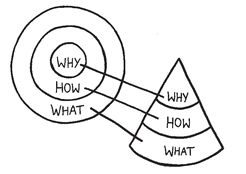

Amplify the Source of Inspiration
The Golden Circle is not just a communication tool; it also provides some insight into how great organizations are organized. As we start to add dimension to the concept of The Golden Circle, it is no longer helpful to look at it as a purely two-dimensional model. If it is to provide any real value in how to build a great organization in our very three-dimensional world, The Golden Circle needs to be three-dimensional. The good news is, it is. It is, in fact, a top-down view of a cone. Turn it on its side and you can see its full value.

The cone represents a company or an organization—an inherently hierarchical and organized system. Sitting at the top of the system, representing the WHY, is a leader; in the case of a company, that’s usually the CEO (or at least we hope it is). The next level down, the HOW level, typically includes the senior executives who are inspired by the leader’s vision and know HOW to bring it to life. Don’t forget that a WHY is just a belief, HOWs are the actions we take to realize that belief and WHATs are the results of those actions. No matter how charismatic or inspiring the leader is, if there are not people in the organization inspired to bring that vision to reality, to build an infrastructure with systems and processes, then at best, inefficiency reigns, and at worst, failure results.
In this rendering the HOW level represents a person or a small group responsible for building the infrastructure that can make a WHY tangible. That may happen in marketing, operations, finance, human resources and all the other C-suite departments. Beneath that, at the WHAT level, is where the rubber meets the road. It is at this level that the majority of the employees sit and where all the tangible stuff actually happens.